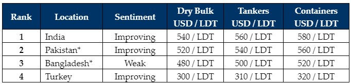

inWeekly Demolition Reports25/09/2023

Another week of astonishing activity has been reported from the sub-continent ship recycling markets, withOwners and Cash Buyers primarily focusing on the Indian market, where several extraordinarily priced container sales reportedly took place over the recent weeks.
Indeed, the USD 600/Ton mark was even breached on a container unit once again, in what seems to be the surest sign yet, that sentiments and demand in Alang are back on track again.
Pakistan is not too far behind India, with some select Dry Bulk sales to Gadani Recyclers who are now re-emerging and have L/C approvals in place, whilst Bangladesh has been left behind in the doldrums during another dreadful week for domestic Recyclers there.
Finally, at the far end, there seems to be some positive movement in Turkey as reports of a firming demand and optimism returning in the market, have come forth this week.
Meanwhile, Indian local steel plate prices had gained about USD 13/LDT last week (as international steel prices simultaneously reported a 2% increase) and this week saw some further gains, before a slight tail off towards the end of the week.
Notwithstanding, Cash Buyers continue to speculate on units and this feverish buying could more than likely lead to some loss-making deals, just for the sake of having vessels in hand to sell. It all seems to be bubbling into some form of “vessel-concluding” obsession, so inexplicable has the fervor to acquire vessels become – and that too at seemingly unrealistic levels, even if that is at a price that is totally unachievable in today’s market.
Only time will tell whether these recent purchases turn out well, especially on delivered units. But if Cash Buyers keep offering well ahead of the market and things turn south, we will witness similar woes to what we saw only a month or so prior, over the recently dire and depressed summer of declines and continual loss-making sub-continent recycling sales.
For week 38 of 2023, GMS demo rankings / pricing for the week are as below.

📄 Download PDF: Ship-recycling-market-insight-week-38-2023-Feverish-Buying.pdfSource: GMS,Inc. ,https://www.gmsinc.net/gms_new/index.php/web